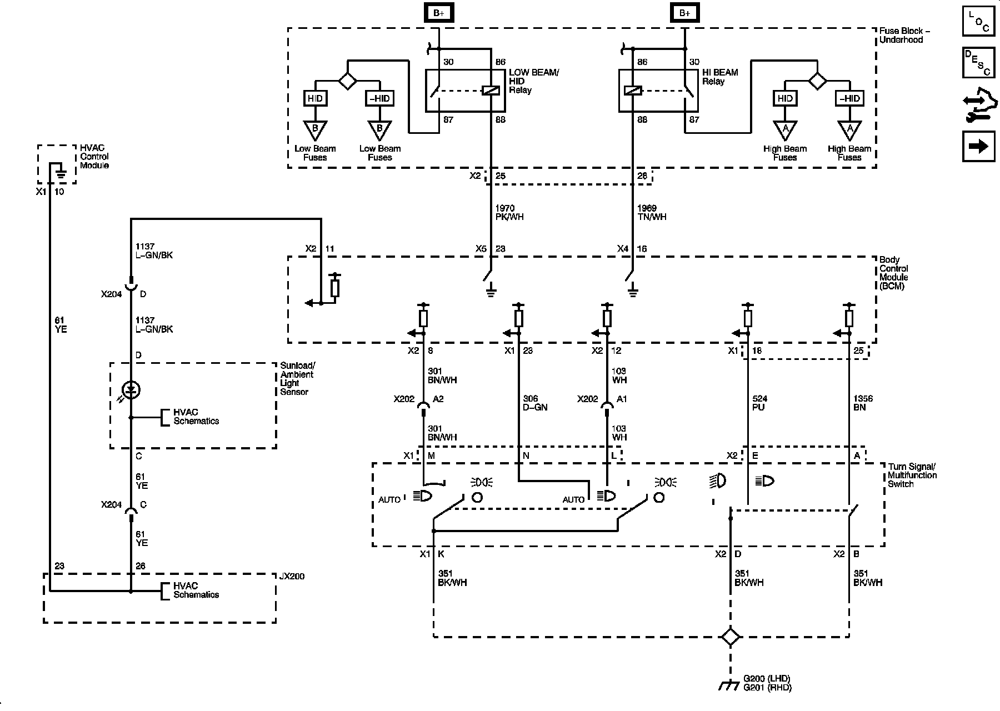

Operation CHARM
: Car repair manuals for everyone.
Home
>>
Cadillac
>>
2008
>>
SRX AWD V8-4.6L
>>
Repair and Diagnosis
>>
Diagrams
>>
Electrical Diagrams
>>
Lighting and Horns
>>
System Diagram
>>
Headlights/Daytime Running Lights (DRL) Schematics
>>
Headlights/Daytime Running Lights (DRL) Schematic 1
Headlights/Daytime Running Lights (DRL) Schematic 1
Headlights/Daytime Running Lights (DRL) Schematics
Headlamp
Controls
